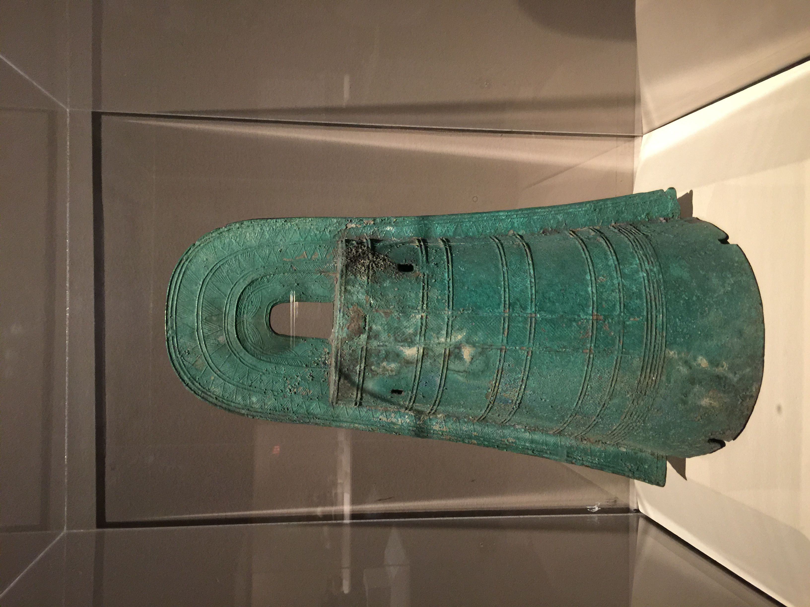
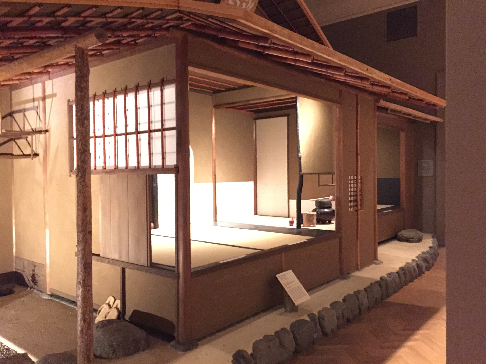

Ritual Bell
1st Century, Japan
This bell is among the most impressive examples of early bronze casting in Asia. This bell(𝘥𝘰𝘵𝘢𝘬𝘶 in Japanese) does not ring very well due to its thin casting, so it was likely used in a ritual or as a sign of political power.
Folding Roundback Armchair

16th Century, China
This chair is one of the greatest designs of Chinese cabnet makers. It combines both functionality and aesthetics. People of high rank would use this as a sort of portable throne. This chair and its exact mate in Shanghai, China, were owned by Chen Mengjia, a great scholar and connoisseur.
Japanese Tea House
19th Century, Japan
In traditional Japanese houses like these, there is usually a recessed display area callaed a 𝘵𝘰𝘬𝘰𝘯𝘰𝘮𝘢, which can have different items on display depending on the season, including hanging scrolls, flower arrangements, or incense burners. Before a tea ceramony, the host would sometimes create a 𝘵𝘰𝘳𝘪𝘢𝘸𝘢𝘴𝘦, a collection of things that the guests would use: utensils, the tea bowl, the water containers, and, or coure, the item on display in the 𝘵𝘰𝘬𝘰𝘯𝘰𝘮𝘢.